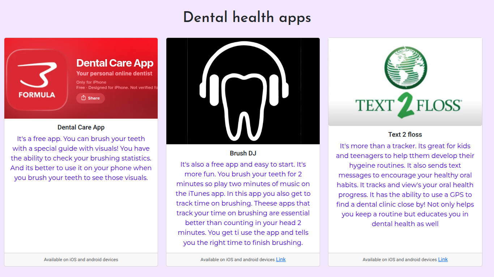

Freedom Project on Dental Technologies
Context
My Freedom Project on Dental Technologies is a coruse long project where I get to apply my html, css ,using a terminal, my aframe applying it to a website. This site will look at dental technology that's used now and the brainstorm of a dental technology.
I want to help inform others why dental health is important as other aspects of overall health.
The topic of this project is also inspired by the fact that I want to work in healthcare when I'm older , and one of the careers im passionate in that field is dental healthcare
Content
What I used to create my website was
- HTML: I used html to input information and organize where I wanted all my text to go.
- CSS: I used it to customize my web make it look nice and cool, I used fonts , shades of purple since I think of purple or blue for healthcare I decided to go with purple!
- Bootstrap: Its a toolkit with code, to build and customize projects and websites, uses prebuit grid system and components with Javascript pluggins, nice and efficient to use. I mostly used bootstrap to structure my website so when I was talking about least complex technologies : Dental care apps. I organized them in in a 3 row column.
Reflection
Challenges
Alignment and positioning was the biggest challenge while I was doing it, I accidentally pressed the refresh button and forgot to git add, git commit, and push. So this resulted in bad. I was trying to find different ways to position, and then the positioning went bad, and then I refreshed. So then I tried to revert. It went wrong again, I reverted again, but half my structure was gone, so I had to reset half of it, going from the apps to below. It didn't lead me to revert till a few 40 mins cause I forgot to commit. So I had to restart, but that's okay, I got it done!
Takeaways : Skills
Skills I learned during this project where (Organized from beginning(top) to end skill's (end)):
- To have a growth mindset: Rather than being ashame of my mistakes , it's better to learn from them
- Always test or try out stuff during learning: I would usually want to get to know the topic before doing anything but doing and learning are both excellent ways of learning
- Discipline: Motivation is nice and all but when you begin to fail you wanna give up, I was going to fail while making mistakes for my freedom project, but I didn't gave up got the work done even though motivation wasn't really present
- Practice=Good performence: When I was getting ready
Next steps
Blog to my project Link about the project